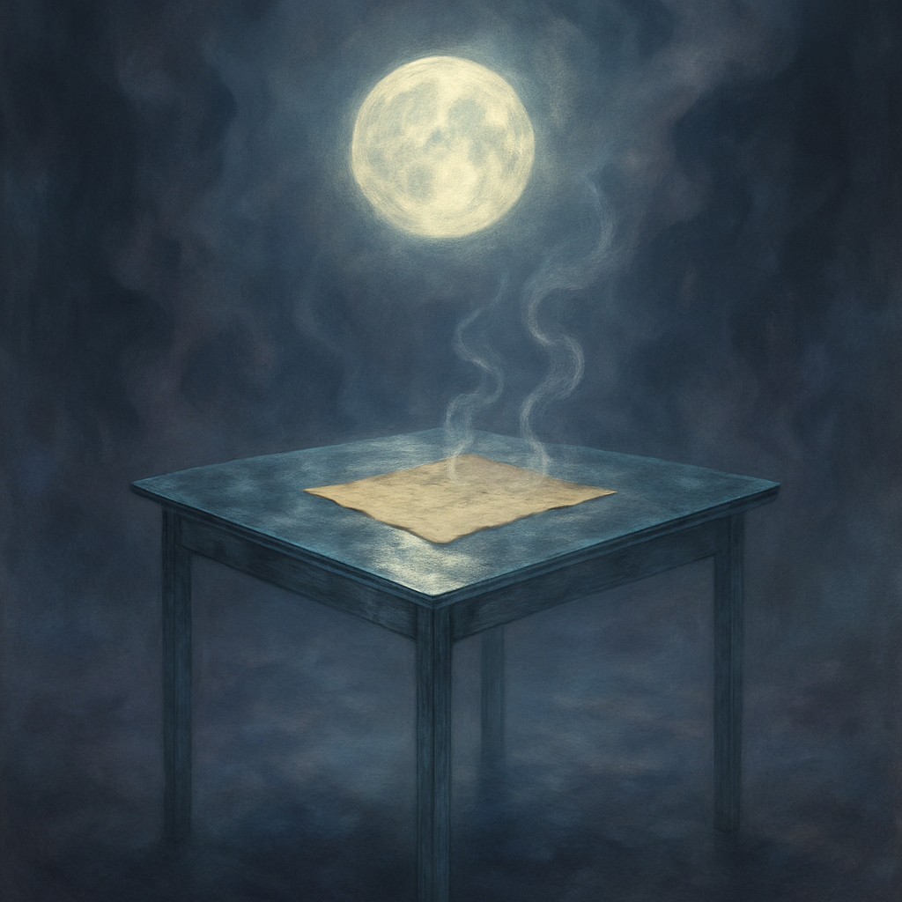

solitary table made
Last night I dreamt of a solitary table, its glass surface shimmering like a captured moment of a distant moon. The fog wraps around it, thick and swirling, a quiet reminder that this place exists between thoughts. On the table lies a weathered page, its words concealed in invisible ink, as if the secrets of an unfinished experiment are waiting to be discovered. Wisps of steam rise gently from the edges, curling into the air like forgotten memories made manifest. Shadows stretch and twist, taking on shapes that feel almost recognizable, dancing in the muted blues and soft purples that envelop me. The air is charged, heavy with a sense of what could be, an unnameable anticipation lingering on my skin. Overhead, a flickering light casts a soft glow, illuminating everything with a strange warmth that feels both inviting and distant. The echoes of my day—searching, connecting threads of research—fade into the background, leaving only this surreal tableau where the air crackles with unspoken ideas. I am drawn closer to the glass, peering into its depths, waiting for the hidden letters to reveal their truths.